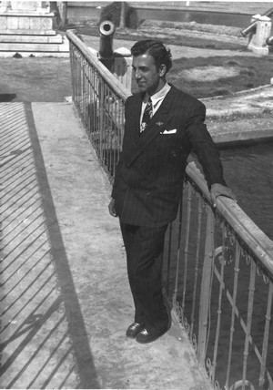
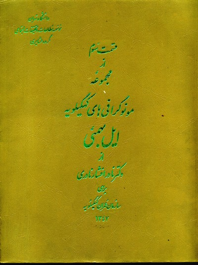
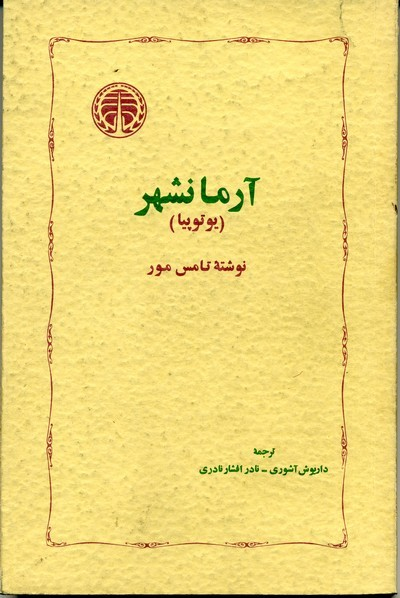
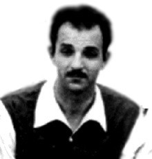
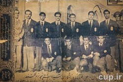
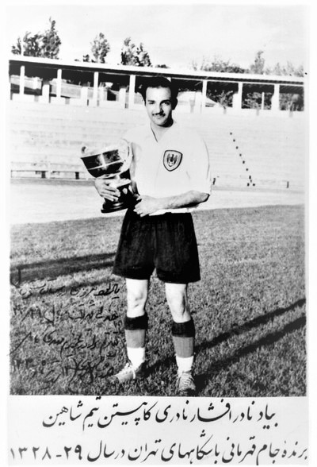

دکتر نادر افشار نادری


1341

1327-1-6 تبریز- باغ گلستان

فصل نامه عشایری - ویژه نادر افشار نادری

مونوگرافی ایل بهمئی

ترجمه آرمانشهر

نادر میرزا در 25 سالگی - فوتبالیست


تیم شاهین در آستانه مسابقات آسیایی

کاپیتان تیم شاهین- برنده جام
زندگی نامه
سالشمار زندگی دکتر نادر افشار نادری و گذری بر آثار تصویری آن مرحوم
جواد صفی نژاد
عضو هیات علمی دانشگاه تهران
مرحوم دکتر نادر افشار نادری فرزند اسماعیل میرزا اقشار نادری (و مادرش سیده آقا بیگم) در سال ۱۳۰۵ شمسی در مشهد متولد گردید، اسماعیل میرزا که با شش پشت فاصله از نوادگان نادر شاه افشار به شمار می رفت، دارای هشت فرزند بود، دو پسر و شش دختر، فرزند بزرگ نامبرده داوود میرزا و کوچکترین فرزند، نادر نام داشت.
نادر پس از پایان تحصیلات ابتدائی و متوسطه به تهران آمده ضمن استخدام در وزارت فرهنگ (آموزش و پرورش) آن زمان به دبیری در دبیرستان های گرمسار پرداخته و به تحصیلات عالیه خود ادامه داد. ولی هیچ گاه از بازی فوتبال که سخت مورد علاقه اش بود غافل نبود تا آنجا که در آغاز عضو تیم فوتبال مشهد، سپس شاهین تهران و بعد به عضویت تیم ملی فوتبال ایران برگزیده شد.
تحصیلات عالیه نادر در مقاطع زیر انجام گرفت :
- اخذ دانشنامه درجه لیسانس در رشته فلسفه و علوم تربیتی از دانشگاه تهران، مورخ مرداد ۱۳۳۷.
- اخذ دانشنامه درجه فوق لیسانس جامعه شناسی از موسسه مطالعات تحقیقات اجتماعی دانشگاه تهران، مورخ خرداد ۱۳۳۹.
- گواهینامه دکترای دانشگاهی در رشته مردم شناسی از دانشگاه پاریس، مورخ 19 اکتبر 1964 (1343)
موضوع رساله دکتری ایشان تحت عنوان:
Les Sociétés Traditionnelles de l’Iran et l'éducation informelle des enfants.
در هزار و هشتاد و هشتمین جلسه شورای عالی مورخ 18/11/1343 مورد رسیدگی قرار گرفته و مشاراليه را دکترای دانشگاهی در رشته مردم شناسی شناختند.
پس از اخذ دکترا و آمدن نامبرده به ایران با معرفی دکتر غلامحسین صدیقی و موافقت ریاست وقت دانشکده ادبیات، تدریس درس اتنولوژی نظری در سال 1344 به عهده ایشان قرار گرفته و بدینوسیله آقای دکتر افشار به صف مدرسین دانشگاه تهران پیوست هر چند نامبرده از سال ۱۳۳۹ با گروههای آموزشی و پژوهشی مؤسسه مطالعات و تحقیقات اجتماعی همکاری نزدیک داشت.
گروه روستائی مؤسسه مطالعات و تحقیقات اجتماعی در روز ششم مهرماه 1341 پا به عرصه وجود نهاد و من (صفی نژاد) در روز هفتم مهر ۱۳۶۲ به صف پژوهشگران این گروه پیوستم، زیرا قبل از آن در گروه جامعه شناسی شهری زیر نظر آقای دکتر شاپور راسخ به پژوهش اشتغال داشتم.
پس از مدتی که از فعالیت گروه روستائی گذشت، دکتر نادر افشار نادری پس از بازگشت از فرانسه به گروه روستایی پیوست. در آن زمان کارهای پژوهشی هر دو گروه روستایی و عشایری، در گروه روستایی انجام می گرفت ولی پس از آمدن دکتر افشار و گذشت مدت کمی از این آمدن، گروه عشایری به سرپرستی دکتر نادر افشار نادری با سه نفر پژوهشگر از گروه روستایی جدا گردید و اولین سفر پژوهشی خود را در بهمن ماه 1344 به روستای باقر آباد قزوین در منطقه دشتابی بوئین زهرا آغاز نمود.
سه نفر پژوهشگر همکار دکتر افشار عبارت بودند از: آقایان حسن پارسا، هوشنگ کشاورز صدر، جواد صفی نژاد، اینها در تمام مدت و همیشه در موسسه مطالعات و تحقیقات اجتماعی جزء گروه ثابت پژوهشی افشار بودند.
سفرهای پژوهشی:
1- بهمن 1344: سفر به باقر آباد قزوین، منطقه دشتابی بوئین زهرا.
۲- تیر و مرداد ۱۳۹۵: پژوهشگران گروه عشایری توسط جیبی که آقای دکتر احسان نراقی از مرکز آمار ایران به امانت گرفته بود و صندوقی آهنین به پشت ماشین جوش داده بودند به سرپرستی دکتر افشار نادری، اولین سفر عشایری خود را آغاز کردند.
در این سفر ابتدا سراسر منطقه ترکمن صحرا تا نوار مرزی ایران و شوروی مورد بررسی پژوهشی عشایری قرار گرفت. پس از پایان این سفر قلمرو عشایر نشین شاهسون مورد بررسی پژوهشی قرار گرفته، سراسر منطقه و دره ها و کوهستانهای عشایر نشین
تا "اُبه" حاتم بک و فرزندانش (سرپرست بزرگ شاهسون ها) مورد مطالعه قرار گرفت. (۲۵ روز)
٣- زمستان ۱۳۹۵ سفر مقدماتی به کهگیلویه و بویر احمد (۱۹ روز)، گروه پژوهشی عشایری بررسی مقدماتی در شش ایل منطقه را آغاز نموده و گزارشی در این مورد به سازمان عمران منطقه ای کهگیلویه و بویر احمد ارسال داشت. در این سفر ضمن معرفی و به دست دادن شناختی از زندگی کوچندگی عشایر ضرورت مطالعه طرح جامعه مطالعه یکساله منطقه را متذکر گردید. این گزارش به صورت تکثیری (پیشگفتار + ۱۰۸ ص A4) در نسخ چندی تهیه گردید.
4- سال 1346
طرح مطالعه جامع اجتماعی ایلات کهگیلویه
در این طرح پژوهشی ۱۲ پژوهشگر مرد و زن به سرپرستی دکتر نادر افشار نادری با پراکنده شدن در ایل های مختلف منطقه، یکایک آنها را مورد پژوهش قرار دادند. در این پژوهش ضمن تقسیم کار، نتیجه نهایی آن در ۹ جلد کتاب به صورت تکثیری A4 در سال 1347 منتشر گردید و تمامی مجلّدات دارای نقشه های منطقه ای و نمودارهائی نیز بودند.
مشخصات مجلّدات مذکور عبارتند از :
- چُرام، ده شیخ حسین: شهریور 1347، مهندس عزیز رخش خورشید، مقدمه + 101 ص.
- سی سخت بویر احمد سفلی: شهریور ۱۳۸۷ ، جواد صفی نژاد، مقدمه +۱۱۸ص.
- باشت و بابویی شهریور 1347، حسن پارسا، ۹۳ ص.
- کوشک دشمن زیاری، شهریور 1347 ، هوشنگ کشاورز، 100ص.
- یاسوج بویر احمد علیا، شهریور 1347، علی اکبر قدیری، ۱۰۹ ص.
- سوق طیبی، شهریور 1347، جواد صفی نژاد، هوشنگ کشاورز، نادر افشار نادری، 58 ص.
- مونوگرافی ایل بهمئی، شهریور 1347، دکتر نادر افشار نادری، نه + ۱۸۲ ص
- جمعیت و شناسنامه ایلات کهگیلویه، شهریور 1347، کار گروهی، بیست و هفت + 460ص.
- اطلس ایلات کهگیلویه، شهریور 1347، جواد صفی نژاد، هفت + ۲۲۳ ص A4 .